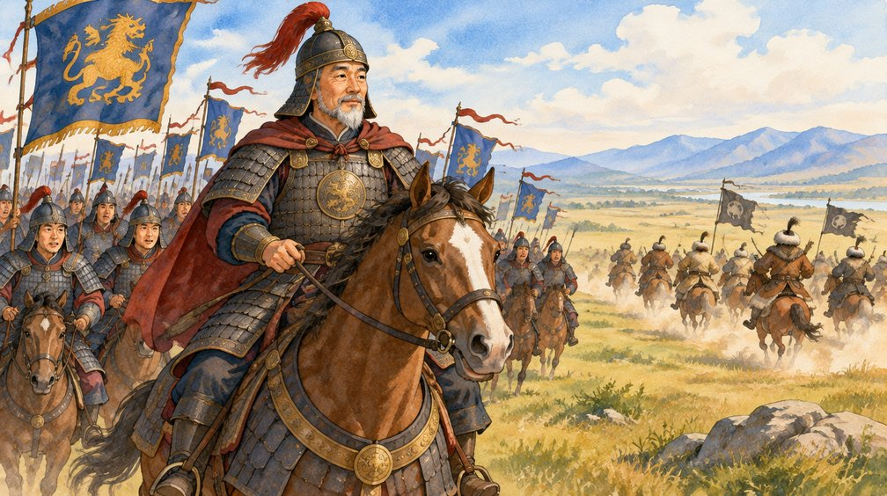

이렇게 공부해요 ① 수학은 그림을 먼저 보고, 사회는 이야기를 먼저 소리 내어 읽어요. ② 기억해요를 보지 않고 말해 본 뒤, 맞았는지 확인해요. ③ 조심!은 오답노트에서 틀린 바로 그 부분이에요. ④ 문제를 다 풀면 마지막 쪽에서 채점하고, 오답노트 문제를 다시 풀어 봐요.
1차시
수학
이상과 이하
오답노트 수학 2번
2차시
수학
초과와 미만
오답노트 수학 8번
3차시
수학
버스 문제로 범위 구하기
오답노트 수학 2번, 9번
4차시
수학
올림
오답노트 수학 13번
5차시
사회
통일 신라 말의 혼란과 고려의 건국
오답노트 사회 1번
6차시
사회
왕건의 뒤를 이은 왕들
오답노트 사회 5번
7차시
사회
거란의 침입을 물리친 고려
오답노트 사회 9번, 11번
8차시
사회
금속 활자와 『직지』
오답노트 사회 19번
1차시
이상과 이하
수학 · 그 수가 들어가요
오답노트 수학 2번
놀이공원에서 생각해 봐요
롤러코스터 앞에 "키 130 cm 이상만 탈 수 있어요"라고 쓰여 있어요. 키가 딱 130 cm인 친구도 탈 수 있을까요? 네, 탈 수 있어요. 130과 같거나 130보다 큰 수를 130 이상인 수라고 해요.
① 130에 색칠한 동그라미
→
② 큰 쪽(오른쪽)으로 선
엘리베이터에 "10명 이하"라고 쓰여 있으면 딱 10명까지 탈 수 있어요. 10과 같거나 10보다 작은 수를 10 이하인 수라고 해요.
10 이하: 10에 색칠, 작은 쪽(왼쪽)으로 선
기억해요이상, 이하는 그 수가 들어가요. 수직선에는 색칠한 동그라미(●)로 나타내요.
따라 해 봐요
115 이상인 수에 모두 ○ 하세요.
131514.92016.5
230 이하인 수에 모두 ○ 하세요.
313029.51830.1
3수직선에 나타낸 수의 범위를 쓰세요.
( 이상 )
4수직선에 나타낸 수의 범위를 쓰세요.
( 이하 )
540 이상 45 이하인 자연수를 모두 쓰세요.
( )
2차시
초과와 미만
수학 · 그 수는 빠져요
오답노트 수학 8번
동그라미 모양을 먼저 봐요
초과는 그 수보다 큰 수, 미만은 그 수보다 작은 수예요. 이때 그 수 자신은 빠져요. 그래서 수직선에는 속이 빈 동그라미(○)를 그려요.
19 초과: 19는 빠져요
23 미만: 23은 빠져요
두 조건을 합치면 범위가 돼요. 오답노트 8번 수직선을 순서대로 읽어 봐요.
① 왼쪽 끝 ○ → 19 초과
→
② 오른쪽 끝 ● → 23 이하
→
③ 19 초과 23 이하
기억해요● 색칠 = 이상·이하 = 그 수가 들어가요 ○ 빈칸 = 초과·미만 = 그 수가 빠져요
조심! 19 초과 23 이하에 19는 들어가지 않지만, 19.1이나 22.5처럼 소수도 범위 안이면 들어가요.
따라 해 봐요
119 초과 23 이하인 수에 모두 ○ 하세요.
1919.12323.521
2수직선에 나타낸 수의 범위를 쓰세요.
( )
3수직선에 나타낸 수의 범위를 쓰세요.
( )
48 초과 12 미만인 자연수를 모두 쓰세요.
( )
3차시
버스 문제로 범위 구하기
수학 · 몇 대가 필요할까요
오답노트 수학 2번, 9번
정원 40명 버스가 5대 필요하다면?
"5대가 필요하다"는 말에는 두 가지 뜻이 숨어 있어요. 4대로는 모자라고, 5대면 모두 탈 수 있다는 뜻이에요.
① 4대: 40×4 = 160명 이걸로는 모자라요 → 160명 초과
→
② 5대: 40×5 = 200명 모두 탈 수 있어요 → 200명 이하
그래서 학생 수는 160명 초과 200명 이하예요. 사람 수는 자연수이니까 161명 이상 200명 이하라고 말해도 같아요.
기억해요버스가 □대 필요하면 (□보다 1 작은 대수) × 정원 초과, □대 × 정원 이하
조심! 문제에서 이상과 이하로 나타내라고 하면 초과 쪽에 1을 더해요. 160 초과 → 161 이상.
따라 해 봐요
1정원이 30명인 버스가 4대 필요해요. 학생 수의 범위를 초과와 이하로 쓰세요.
( 명 초과 명 이하 )
2정원이 45명인 버스가 3대 필요해요. 학생 수의 범위를 이상과 이하로 쓰세요.
( 명 이상 명 이하 )
3사과를 한 상자에 10개씩 담으면 상자가 최소 6개 필요해요. 사과 수의 범위를 이상과 이하로 쓰세요.
( 개 이상 개 이하 )
4차시
올림
수학 · 모자라면 하나 더
오답노트 수학 13번
1000원짜리 지폐로만 낸다면?
2763원짜리 물건을 1000원짜리 지폐로만 사려면 몇 장이 필요할까요? 2장(2000원)으로는 모자라니 3장(3000원)을 내야 해요. 이렇게 구하려는 자리 아래에 수가 조금이라도 있으면 그 자리 수를 1 올리고 아래를 0으로 만드는 것을 올림이라고 해요.
수
천의 자리 아래
올림하여 천의 자리까지
2763
763 (있어요)
3000
2002
2 (있어요)
3000
3000
0 (없어요)
3000 그대로
3005
5 (있어요)
4000
1980
980 (있어요)
2000
올림하여 3000이 되는 수를 수직선에 나타내면 2000 초과 3000 이하예요.
2000은 그대로 2000, 3000은 그대로 3000
기억해요올림하여 천의 자리까지 나타내서 3000이 되는 수는 2001부터 3000까지예요.
삼국을 통일한 신라는 처음에는 평화로웠어요. 그런데 시간이 지나자 서울(경주)의 진골 귀족들이 서로 왕이 되겠다고 싸우기 시작했어요. 왕이 바뀌고 또 바뀌어서, 약 150년 동안 왕이 20명이나 바뀌었어요.
장면 2
귀족들이 싸움에 정신이 팔린 사이 나라 살림은 엉망이 되었어요. 세금을 더 걷으려 하자 농민들은 살기 힘들어 곳곳에서 들고일어났어요. 나라가 몹시 혼란해졌어요.
장면 3
그러자 지방에서 성을 쌓고 군사를 거느린 세력이 나타났어요. 이들은 스스로 '성주', '장군'이라 부르며 자기 지역을 다스렸어요. 이들을 호족이라고 해요.
장면 4
호족 가운데 견훤은 후백제를, 궁예는 후고구려를 세웠어요. 신라까지 세 나라가 다시 생겼으니 이때를 후삼국 시대라고 해요. 궁예의 신하였던 왕건이 918년에 고려를 세우고, 936년에 후삼국을 통일했어요.
신라 말
귀족 다툼, 호족 성장
900년쯤
후백제·후고구려
918년
왕건, 고려 건국
936년
후삼국 통일
기억해요통일 신라 말 = 지배층의 권력 다툼으로 나라가 혼란 + 지방에서 호족이 성장
조심! '왕권이 강했다', '모두 잘 살았다', '모두 평등했다'는 통일 신라 말과 반대예요.
이야기를 떠올리며 풀어요
1통일 신라 말에 지방에서 성을 쌓고 군사를 거느린 세력을 무엇이라고 하나요? ( )
2맞으면 ○, 틀리면 × 하세요. 통일 신라 말에는 왕권이 강해 나라가 안정되었다. ( )
3고려를 세운 사람은 누구인가요? ( )
4통일 신라 말에 나라가 혼란해진 까닭을 한 문장으로 써 보세요.
6차시
왕건의 뒤를 이은 왕들
사회 · 왕의 힘을 키워요
오답노트 사회 5번
이야기로 풀어 보기 · 힘센 호족을 어떻게 할까?
광종은 시험(과거제)으로 관리를 뽑고, 억울한 노비를 풀어 주었어요.
장면 1
왕건은 나라를 세울 때 호족들의 도움을 많이 받았어요. 그래서 호족의 딸들과 결혼하고 벼슬도 주었어요. 그런데 왕건이 죽고 나니 호족의 힘이 너무 세서 왕이 마음대로 나라를 다스리기 어려웠어요.
장면 2
넷째 왕 광종은 생각했어요. "억울하게 노비가 된 사람을 풀어 주자!" 호족들은 전쟁 포로나 빚진 사람을 노비로 많이 거느렸는데, 이들을 풀어 주니 백성은 기뻐하고 호족의 힘은 약해졌어요(노비안검법).
장면 3
광종은 또 "집안이 아니라 실력으로 관리를 뽑자!"며 시험을 보게 했어요. 이것이 과거제예요. 공부를 잘한 사람이 관리가 되니 왕에게 충성하는 신하가 늘었어요.
장면 4
여섯째 왕 성종은 "지방도 왕이 직접 다스리자!"며 주요 지방에 관청을 두고 관리를 보냈어요. 이제 호족 마음대로 하던 지방까지 나라의 손길이 닿게 되었어요.
왕
한 일
결과
광종
억울한 노비를 풀어 줌, 과거제 실시
호족 힘 약해지고 왕권 강해짐
성종
주요 지방에 관청을 두고 관리를 보냄
지방까지 나라가 다스림
조심!신분에 따라 오를 수 있는 관직을 정해 둔 것은 신라의 골품제예요. 고려 왕들의 정책이 아니에요. 고려는 오히려 시험(과거제)으로 관리를 뽑았어요.
이야기를 떠올리며 풀어요
1시험을 보아 실력으로 관리를 뽑는 제도는 무엇인가요? ( )
2억울하게 노비가 된 사람을 풀어 준 왕은 누구인가요? ( )
3맞으면 ○, 틀리면 × 하세요. 고려의 왕들은 신분에 따라 오를 수 있는 관직을 정해 두었다. ( )
4광종이 과거제를 실시한 까닭을 '호족'이라는 낱말을 넣어 써 보세요.
7차시
거란의 침입을 물리친 고려
사회 · 말로 막고, 싸워서 이기다
오답노트 사회 9번, 11번
이야기로 풀어 보기 · 북쪽에서 온 거란

강감찬이 귀주에서 거란군을 크게 물리쳤어요(귀주 대첩).
장면 1
고려 북쪽에는 거란이라는 나라가 있었어요. 거란은 926년에 발해를 멸망시켰어요. 발해는 고구려를 이은 나라였고, 고려도 고구려를 이었다고 생각했어요. 그래서 고려는 형제 같은 나라를 무너뜨린 거란을 적으로 여겼어요. 왕건은 거란이 보낸 낙타를 다리 밑에 매어 굶겨 버리기도 했대요.
장면 2
1차 침입(993년): 거란 장수 소손녕이 80만 대군이라며 쳐들어왔어요. 이때 서희가 적진으로 직접 찾아가 "고려는 고구려를 이은 나라다. 여진이 길을 막아 거란과 사귀지 못했을 뿐이다"라고 말했어요. 서희는 싸우지 않고 말로 거란군을 돌려보내고, 오히려 강동 6주 땅까지 얻었어요(외교 담판).
장면 3
2차 침입(1010년): 거란이 다시 쳐들어와 수도 개경까지 불탔어요. 하지만 고려군이 돌아가는 거란군을 끈질기게 공격했어요.
장면 4
3차 침입(1018년): 거란이 10만 대군으로 또 쳐들어오자 강감찬이 고려군을 이끌었어요. 강감찬은 귀주에서 거란군을 크게 물리쳤어요. 살아 돌아간 거란군이 몇천 명뿐이었대요. 이 싸움이 귀주 대첩이에요.